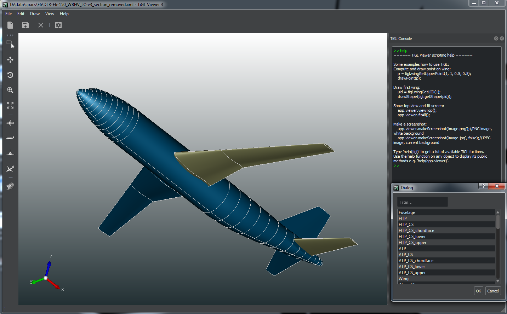
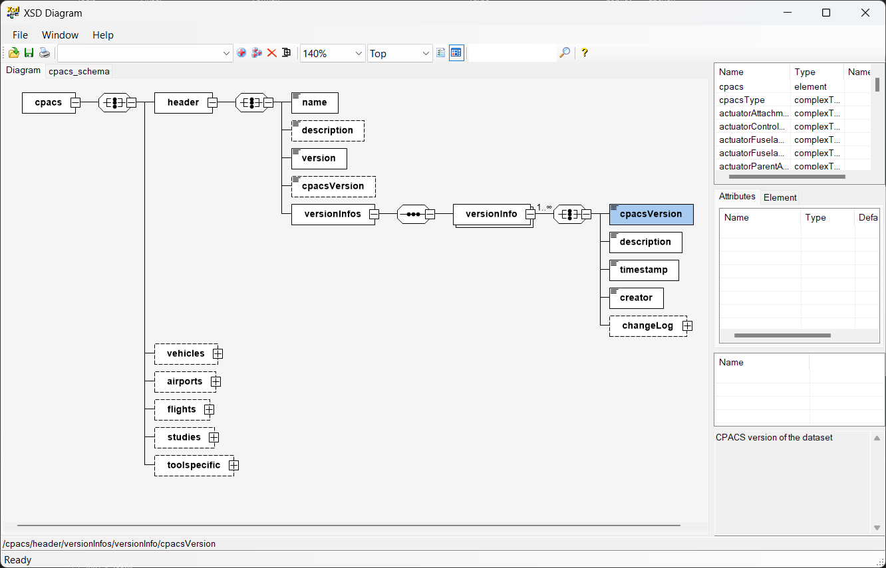

CPACS is used in national and international aircraft design projects, and the software around it ranges from supporting libraries such as TiXI and TiGL to design tools such as VAMPzero. Many tools are connected through a wrapper that translates CPACS data into the input format of the tool and the results back again — which means the tool itself does not have to be modified.
The TiXI library is an open source XML library with additional methods for CPACS specific files, such as checking uIDs for uniqueness.
CPACS can be used with any XML library, though. If you are already familiar with one in your language of choice, starting there is often quicker.
The TiGL library is an open source geometry library developed specifically for CPACS files. It includes the TiGL Viewer, an interactive interface for inspecting CPACS geometry.

RCE is an open source, distributed, workflow-driven integration environment. Engineers and scientists use it to design and simulate complex systems — aircraft, ships, satellites — by integrating their own design and simulation tools. It carries dedicated wrapping functionality for CPACS, which makes integrating CPACS compatible tools fairly easy.
CPACS Creator was developed by Malo Drougard at CFS Engineering. It builds aircraft configurations on the CPACS parametrisation from scratch using the TiGL Viewer, and existing CPACS files can be loaded and edited directly. The TiGL homepage carries the detailed functionality.
The video is a tutorial our colleagues at Airinnova AB produced in the context of the CEASIOMpy solution.
XSDDiagram is a free XML Schema Definition viewer for Windows, written in C# on .NET 2.0. In the CPACS community it is often used to get a quick overview of the hierarchical tree structure.
A version adapted for CPACS, with a more compact tree view and the XML types on display, is available as a download.
